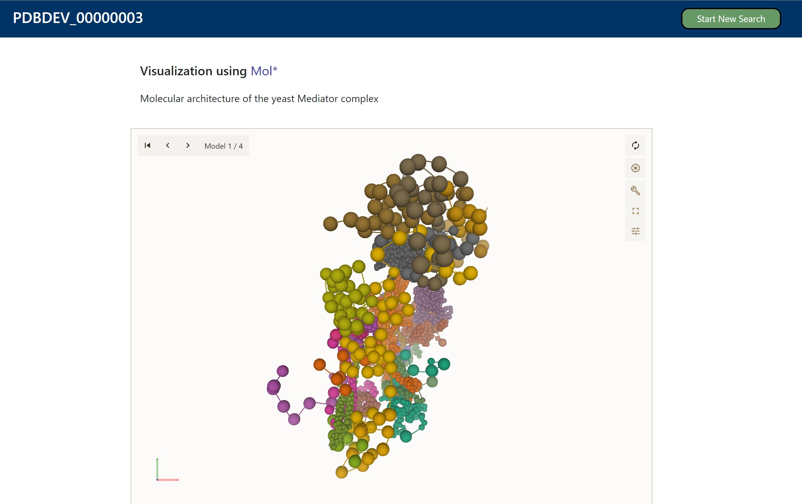

PDB-Dev#
Avtorji: Lev Jošt, Marko Kovačić, Špela Rapuš
Datum predstavitve: 2022-05-18
Namen vaje#
Namen vaje je spoznati program PDB-Dev, v katerem najdemo modele struktur kompleksov bioloških makromolekul. Ti so bili določeni s pomočjo integrativnega modeliranja.
Program#
Program: PDB-Dev
Avtorji programa: Dr. Andrej Sali, Dr. Helen M. Berman, Dr. Brinda Vallat, Dr. John Westbrook, Dr. Carl Kesselman, Dr. Benjamin Webb, Dr. Sai Ganesan, Dr. Inacia Echeverria, Maryam Fayazi; Rutgers, the State University of New Jersey, University of California San Francisco, University of Southern California
Reference:
Vallat B, Webb B, Fayazi M, Voinea S, Tangmunarunkit H, Ganesan SJ, et al. New system for archiving integrative structures. Acta Cryst D. 2021;77: 1486–1496. doi:10.1107/S2059798321010871
Berman HM, Adams PD, Bonvin AA, Burley SK, Carragher B, Chiu W, et al. Federating Structural Models and Data: Outcomes from A Workshop on Archiving Integrative Structures. Structure. 2019;27: 1745–1759. doi:10.1016/j.str.2019.11.002
Vallat B, Webb B, Westbrook J, Sali A, Berman HM. Archiving and disseminating integrative structure models. J Biomol NMR. 2019;73: 385–398. doi:10.1007/s10858-019-00264-2
Opis programa#
Strukture številnih kompleksnih bioloških kompleksov so bile določene s pomočjo integrativnega modeliranja s kombinacijo podatkov iz več eksperimentov. PDB-Dev je bil razvit, da arhivira te strukture.
Integrativna določitev struktur je modeliranje struktur bioloških sistemov, ki temelji na informacijah iz številnih eksperimentalnih in teoretičnih metod (X-ray, NMR, 3DEM, …) Ti eksperimentalni podatki so zbrani in upoštevajoč njihove omejitve oz. nenatančnosti dodani že nekim eksperimentalno določenim ali modeliranim strukturam molekularnih komponent bioloških kompleksov.
Integrativno modeliranje je pomembno, ker se struktura makromolekularnih kompleksov običajno ne more v celoti določiti s standardnimi eksperimentalnimi in teoretičnimi metodami.
Proces nalaganja struktur v PDB-Dev:
Zelo pomembna je oblika podatkov oz. tehnične specifikacije, ki definirajo podatke in njihov zapis. Format zapisa podatkov je PDBx/mmCIF. Slovar, v katerem najdemo vse te definicije zapisa podatkov se imenuje IHM Dictionary. Med vse te podatke spadajo: atomske koordinate, eksperimentalni pogoji, omejitve metod (ločljivost, torzijski koti), začetni strukturni modeli molekularnih komponent, informacije o eksperimentalnih podatkih iz drugih zbirk (imena zbirk, accession number …), opis protokolov modeliranja, uporabljeni programi za modeliranje (software), avtorji, referenčna zaporedja itd.
Modul, ki olajša pisanje datotek formata mmCIF, ki so skladne z IHM-dictionary je Python-ihm software library. Tudi programi za modeliranje in vizualizacijo struktur lahko uporabljajo ta modul za pomoč. Ker je delo s Python-ihm software library programersko dokaj zahtevno, so ustvarjalci programa PDB-Dev ustvarili protokol za lažje nalaganje struktur (slika 1). Najprej raziskovalci vnesejo koordinate zmodeliranega biološkega kompleksa, avtomatski software preveri, če se še lahko najdejo kakšne dodatne informacije o tem kompleksu. Nato se te informacije nadgradijo z ostalimi podatki (avtorji, protokoli modeliranja, reference eksperimentalnih podatkov iz drugih zbirk, referenčna zaporedja …). Potem se naložijo koordinate začetnih modelov makromolekul, ki sestavljajo kompleks, in omejitve eksperimentalnih metod. Avtomatski software še enkrat vse preveri in če so podatki ustrezni, se ustvari datoteka mmCIF.

Sledi proces kuracije in validacije. Za vse makromolekule v strukturi se pridobi podatke o referenčnih zaporedjih (tu so predvsem ključni accession code iz UniProta). Uporabi se Blast za poravnavo makromolekularnih sekvenc v strukturah s pripadajočimi referenčnimi zaporedji, da se preveri, če se res ustrezno ujemajo. Preveri se še nomenklatura malih molekul (mali ligandi so pogosto prisotni v integrativnih strukturah in tu se zagotovi da so ustrezno poimenovani in predstavljeni).
Po naložitvi struktur v PDB-Dev je možna vizualizacija s programoma ChimeraX in Mol*.
Trenutno je v PDB-Dev arhiviranih 78 modelov struktur bioloških makromolekul. Te lahko hitro najdemo pod iskalno vrstico ‘Browse structures’. Podatke lahko iščemo glede na eksperimentalne metode, Model Scale in Model State. Dodatno lahko označimo katere podatke bi želeli prikazati (npr. avtorji, datum vnosa, software za modeliranje).

Za razliko od PDB-ja, ta program lahko hrani strukture kompleksov, katerih molekulske komponente so lahko določene z različno ločljivostjo (Multi Scale) ali s približno enako ločljivostjo (Single Scale). Program lahko shrani tudi več različnih konformacijskih oblik posameznega kompleksa (Multi State) ali pa eno samo (Single State).
Vhodni podatki#
Strukture se lahko išče z iskalno vrstico preko imen kompleksov ali molekularnih komponent le-teh, accession code, eksperimentalnih metod, imen avtorjev in software-ov, ki so bili uporabljeni za modeliranje. Pri tem lahko uporabimo boolean operatorje (AND, OR, NOT) ali pa iščemo preko besed, ki se pojavljajo v imenih kompleksov (npr. nup*, *some).
Navodila#
Vhodni podatki#
V iskalno vrstico vpišite accession code PDBDEV_00000012 (Nuclear Pore Complex (NPC) from yeast)
V iskalno vrstico vpišite accession code PDBDEV_00000028 (RNF168-RING domain and nucleosome complex)
V iskalno vrstico vpišite accession code PDBDEV_00000003 (yeast Mediator complex)
Postopek dela#
Odprite program PDB-Dev.
Kliknite na ‘Browse structures’, kjer so zbrane vse že določene strukture.
Strukture lahko iščete s pomočjo filtrov: Multi Scale, Multi State in še dodatni (stolpec se prikaže v tabeli rezultatov)
V iskalno vrstico vpišite accession code PDBDEV_00000012 (Nuclear Pore Complex (NPC) from yeast). Strukturo vizualiziramo z Mol*.
V iskalno vrstico vpišite accession code PDBDEV_00000028 (RNF168-RING domain and nucleosome complex). Strukturo vizualiziramo z Mol*. Sprehajamo se lahko čez več konformacijskih stanj. Prenesite datoteko s klikom na ‘Download structure’ in jo odprite v Chimeri.
V iskalno vrstico vpišite accession code PDBDEV_00000003 (yeast Mediator complex). Strukturo vizualiziramo z Mol*. Nekateri deli strukture so določeni s slabšo ločljivostjo, zaradi različnih eksperimentalnih metod, ki so bile uporabljene.
Pričakovani rezultati in razlaga#
Rezultat programa je izrisana struktura biološkega kompleksa.

Vidnih je 10 različnih konformacijskih stanj.


Vidna je slaba ločljivost strukture (okrog 20 Å)